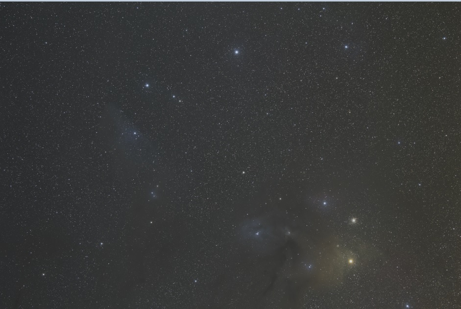
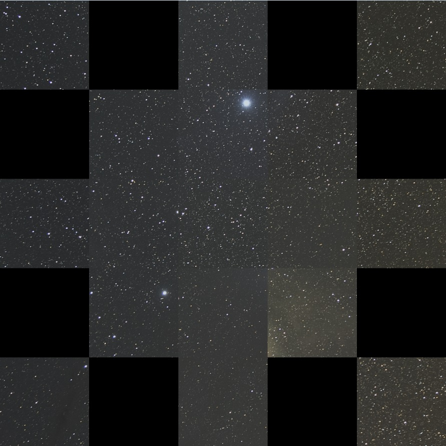

<!DOCTYPE html>
<html>

<head><meta name="generator" content="Hexo 3.8.0">
  <meta charset="utf-8">
  
  <title>よしなに画像の四隅を切り出してみる | ほしよみ大学生のブログ</title>
  <meta name="viewport" content="width=device-width">
  <meta name="description" content="あいさつこんにちは．もう5月も終盤ということで，時間が経つのは早いですね．16bit tiff形式の画像から四隅（フルサイズと仮定された場合はAPSCの四隅も）を切り出して画像にするプログラムを書きました．（無いものは作ろう）Visual Studio 2017で開発してgithubにそのまま上げてます（いいのかこれ…？）．同じような環境があるなら.slnを開いて，OpenCVの設定だけ自分の環境">
<meta name="keywords" content="天体写真,画像処理,OpenCV">
<meta property="og:type" content="article">
<meta property="og:title" content="よしなに画像の四隅を切り出してみる">
<meta property="og:url" content="http://dabokun.github.io/2019/05/28/00000008-suitably-corner-make/index.html">
<meta property="og:site_name" content="ほしよみ大学生のブログ">
<meta property="og:description" content="あいさつこんにちは．もう5月も終盤ということで，時間が経つのは早いですね．16bit tiff形式の画像から四隅（フルサイズと仮定された場合はAPSCの四隅も）を切り出して画像にするプログラムを書きました．（無いものは作ろう）Visual Studio 2017で開発してgithubにそのまま上げてます（いいのかこれ…？）．同じような環境があるなら.slnを開いて，OpenCVの設定だけ自分の環境">
<meta property="og:locale" content="ja">
<meta property="og:image" content="http://dabokun.github.io/2019/05/28/00000008-suitably-corner-make/card.jpg">
<meta property="og:updated_time" content="2019-07-11T09:31:28.000Z">
<meta name="twitter:card" content="summary_large_image">
<meta name="twitter:title" content="よしなに画像の四隅を切り出してみる">
<meta name="twitter:description" content="あいさつこんにちは．もう5月も終盤ということで，時間が経つのは早いですね．16bit tiff形式の画像から四隅（フルサイズと仮定された場合はAPSCの四隅も）を切り出して画像にするプログラムを書きました．（無いものは作ろう）Visual Studio 2017で開発してgithubにそのまま上げてます（いいのかこれ…？）．同じような環境があるなら.slnを開いて，OpenCVの設定だけ自分の環境">
<meta name="twitter:image" content="http://dabokun.github.io/2019/05/28/00000008-suitably-corner-make/card.jpg">
<meta name="twitter:creator" content="@dabo_pic">
  
  <link rel="alternative" href="/atom.xml" title="ほしよみ大学生のブログ" type="application/atom+xml">
  
  
  <link rel="icon" href="/images/favicon.png">
  
  <link rel="stylesheet" href="/css/style.css">
  <!--[if lt IE 9]><script src="//html5shiv.googlecode.com/svn/trunk/html5.js"></script><![endif]-->
  
</head></html>
<body>
  <div id="container">
    <div class="mobile-nav-panel">
	<i class="icon-reorder icon-large"></i>
</div>
<header id="header">
	<h1 class="blog-title">
		<a href="/">ほしよみ大学生のブログ</a>
	</h1>
	<nav class="nav">
		<ul>
			<li><a href="/">Home</a></li><li><a href="/categories">Categories</a></li><li><a href="/tags">Tags</a></li><li><a href="/archives">Archives</a></li><li><a href="/about">About</a></li><li><a href="/work">Work</a></li>
			<li><a id="nav-search-btn" class="nav-icon" title="Search"></a></li>
			<li><a href="https://github.com/dabokun"></a>
			</li>
			<li><a href="https://twitter.com/dabo_pic"></a></li>
			<li><a href="/atom.xml" id="nav-rss-link" class="nav-icon" title="RSS Feed"></a>
			</li>
		</ul>
	</nav>
	<div id="search-form-wrap">
		<form action="//google.com/search" method="get" accept-charset="UTF-8" class="search-form"><input type="search" name="q" class="search-form-input" placeholder="Search"><button type="submit" class="search-form-submit">&#xF002;</button><input type="hidden" name="sitesearch" value="http://dabokun.github.io"></form>
	</div>
</header>
    <div id="main">
      <article id="post-00000008-suitably-corner-make" class="post">
	<footer class="entry-meta-header">
		<span class="meta-elements date">
			<a href="/2019/05/28/00000008-suitably-corner-make/" class="article-date">
  <time datetime="2019-05-28T12:55:20.000Z" itemprop="datePublished">2019-05-28</time>
</a>
		</span>
		<span class="meta-elements author">astr0dab0</span>
		<div class="commentscount">
			
			<a href="http://dabokun.github.io/2019/05/28/00000008-suitably-corner-make/#disqus_thread" class="article-comment-link">Comments</a>
			
		</div>
	</footer>
	
	<header class="entry-header">
		
  
    <h1 class="article-title entry-title" itemprop="name">
      よしなに画像の四隅を切り出してみる
    </h1>
  

	</header>
	<div class="entry-content">
		
		
		<div id="toc" class="toc-article">
			<p class="toc-title">目次</p>
			<ol class="toc"><li class="toc-item toc-level-3"><a class="toc-link" href="#あいさつ"><span class="toc-number">1.</span> <span class="toc-text">あいさつ</span></a></li><li class="toc-item toc-level-3"><a class="toc-link" href="#モチベーション"><span class="toc-number">2.</span> <span class="toc-text">モチベーション</span></a></li><li class="toc-item toc-level-3"><a class="toc-link" href="#プログラム"><span class="toc-number">3.</span> <span class="toc-text">プログラム</span></a></li><li class="toc-item toc-level-3"><a class="toc-link" href="#使い方"><span class="toc-number">4.</span> <span class="toc-text">使い方</span></a></li><li class="toc-item toc-level-3"><a class="toc-link" href="#結果"><span class="toc-number">5.</span> <span class="toc-text">結果</span></a></li><li class="toc-item toc-level-3"><a class="toc-link" href="#リミテーション"><span class="toc-number">6.</span> <span class="toc-text">リミテーション</span></a></li></ol>
		</div>
		
		<h3 id="あいさつ"><a href="#あいさつ" class="headerlink" title="あいさつ"></a>あいさつ</h3><p>こんにちは．もう5月も終盤ということで，時間が経つのは早いですね．<br>16bit tiff形式の画像から四隅（フルサイズと仮定された場合はAPSCの四隅も）を切り出して画像にするプログラムを書きました．（無いものは作ろう）<br>Visual Studio 2017で開発して<a href="https://github.com/dabokun/corner_maker" target="_blank" rel="noopener">github</a>にそのまま上げてます（いいのかこれ…？）．同じような環境があるなら.slnを開いて，OpenCVの設定だけ自分の環境に合わせていただければ動くと思います．そうでなく，C++のコンパイラとOpenCVが入った環境なら，以下のプログラムコードを参考にしてください．</p>
<a id="more"></a>
<h3 id="モチベーション"><a href="#モチベーション" class="headerlink" title="モチベーション"></a>モチベーション</h3><p><a href="https://twitter.com/richie_astropho" target="_blank" rel="noopener">りっちー氏</a>の以下のツイートを見て<br><div class="twitter-wrapper"><blockquote class="twitter-tweet"><a href="https://twitter.com/richie_astropho/status/1131550050721525760" target="_blank" rel="noopener"></a></blockquote></div><script async defer src="//platform.twitter.com/widgets.js" charset="utf-8"></script></p>
<p>割と簡単に書けるのでは？と思ったので書いてみました．</p>
<h3 id="プログラム"><a href="#プログラム" class="headerlink" title="プログラム"></a>プログラム</h3><p>きれいなプログラムではないですが以下がプログラムです．<br><figure class="highlight c++"><table><tr><td class="gutter"><pre><span class="line">1</span><br><span class="line">2</span><br><span class="line">3</span><br><span class="line">4</span><br><span class="line">5</span><br><span class="line">6</span><br><span class="line">7</span><br><span class="line">8</span><br><span class="line">9</span><br><span class="line">10</span><br><span class="line">11</span><br><span class="line">12</span><br><span class="line">13</span><br><span class="line">14</span><br><span class="line">15</span><br><span class="line">16</span><br><span class="line">17</span><br><span class="line">18</span><br><span class="line">19</span><br><span class="line">20</span><br><span class="line">21</span><br><span class="line">22</span><br><span class="line">23</span><br><span class="line">24</span><br><span class="line">25</span><br><span class="line">26</span><br><span class="line">27</span><br><span class="line">28</span><br><span class="line">29</span><br><span class="line">30</span><br><span class="line">31</span><br><span class="line">32</span><br><span class="line">33</span><br><span class="line">34</span><br><span class="line">35</span><br><span class="line">36</span><br><span class="line">37</span><br><span class="line">38</span><br><span class="line">39</span><br><span class="line">40</span><br><span class="line">41</span><br><span class="line">42</span><br><span class="line">43</span><br><span class="line">44</span><br><span class="line">45</span><br><span class="line">46</span><br><span class="line">47</span><br><span class="line">48</span><br><span class="line">49</span><br><span class="line">50</span><br><span class="line">51</span><br><span class="line">52</span><br><span class="line">53</span><br><span class="line">54</span><br><span class="line">55</span><br><span class="line">56</span><br><span class="line">57</span><br><span class="line">58</span><br><span class="line">59</span><br><span class="line">60</span><br><span class="line">61</span><br><span class="line">62</span><br><span class="line">63</span><br><span class="line">64</span><br><span class="line">65</span><br><span class="line">66</span><br><span class="line">67</span><br><span class="line">68</span><br><span class="line">69</span><br><span class="line">70</span><br><span class="line">71</span><br><span class="line">72</span><br><span class="line">73</span><br><span class="line">74</span><br><span class="line">75</span><br><span class="line">76</span><br><span class="line">77</span><br><span class="line">78</span><br><span class="line">79</span><br><span class="line">80</span><br><span class="line">81</span><br><span class="line">82</span><br><span class="line">83</span><br><span class="line">84</span><br><span class="line">85</span><br><span class="line">86</span><br><span class="line">87</span><br><span class="line">88</span><br><span class="line">89</span><br><span class="line">90</span><br><span class="line">91</span><br><span class="line">92</span><br><span class="line">93</span><br><span class="line">94</span><br><span class="line">95</span><br><span class="line">96</span><br><span class="line">97</span><br><span class="line">98</span><br><span class="line">99</span><br><span class="line">100</span><br><span class="line">101</span><br><span class="line">102</span><br><span class="line">103</span><br><span class="line">104</span><br><span class="line">105</span><br><span class="line">106</span><br><span class="line">107</span><br><span class="line">108</span><br><span class="line">109</span><br><span class="line">110</span><br><span class="line">111</span><br><span class="line">112</span><br><span class="line">113</span><br><span class="line">114</span><br><span class="line">115</span><br><span class="line">116</span><br><span class="line">117</span><br><span class="line">118</span><br><span class="line">119</span><br><span class="line">120</span><br><span class="line">121</span><br><span class="line">122</span><br><span class="line">123</span><br><span class="line">124</span><br><span class="line">125</span><br><span class="line">126</span><br><span class="line">127</span><br><span class="line">128</span><br><span class="line">129</span><br><span class="line">130</span><br><span class="line">131</span><br><span class="line">132</span><br><span class="line">133</span><br><span class="line">134</span><br><span class="line">135</span><br><span class="line">136</span><br><span class="line">137</span><br><span class="line">138</span><br><span class="line">139</span><br><span class="line">140</span><br><span class="line">141</span><br><span class="line">142</span><br><span class="line">143</span><br><span class="line">144</span><br><span class="line">145</span><br><span class="line">146</span><br><span class="line">147</span><br><span class="line">148</span><br><span class="line">149</span><br><span class="line">150</span><br><span class="line">151</span><br><span class="line">152</span><br><span class="line">153</span><br><span class="line">154</span><br><span class="line">155</span><br><span class="line">156</span><br><span class="line">157</span><br><span class="line">158</span><br><span class="line">159</span><br><span class="line">160</span><br><span class="line">161</span><br><span class="line">162</span><br><span class="line">163</span><br><span class="line">164</span><br><span class="line">165</span><br><span class="line">166</span><br><span class="line">167</span><br><span class="line">168</span><br><span class="line">169</span><br><span class="line">170</span><br><span class="line">171</span><br><span class="line">172</span><br><span class="line">173</span><br><span class="line">174</span><br><span class="line">175</span><br><span class="line">176</span><br><span class="line">177</span><br><span class="line">178</span><br><span class="line">179</span><br><span class="line">180</span><br><span class="line">181</span><br><span class="line">182</span><br><span class="line">183</span><br><span class="line">184</span><br><span class="line">185</span><br><span class="line">186</span><br><span class="line">187</span><br><span class="line">188</span><br><span class="line">189</span><br><span class="line">190</span><br><span class="line">191</span><br><span class="line">192</span><br><span class="line">193</span><br><span class="line">194</span><br><span class="line">195</span><br><span class="line">196</span><br><span class="line">197</span><br><span class="line">198</span><br><span class="line">199</span><br><span class="line">200</span><br><span class="line">201</span><br><span class="line">202</span><br><span class="line">203</span><br><span class="line">204</span><br><span class="line">205</span><br><span class="line">206</span><br><span class="line">207</span><br><span class="line">208</span><br><span class="line">209</span><br><span class="line">210</span><br></pre></td><td class="code"><pre><span class="line"><span class="meta">#<span class="meta-keyword">include</span> <span class="meta-string">"stdafx.h"</span></span></span><br><span class="line"><span class="meta">#<span class="meta-keyword">include</span> <span class="meta-string">&lt;opencv2/opencv.hpp&gt;</span></span></span><br><span class="line"><span class="meta">#<span class="meta-keyword">include</span> <span class="meta-string">&lt;iostream&gt;</span></span></span><br><span class="line"><span class="meta">#<span class="meta-keyword">include</span> <span class="meta-string">&lt;fstream&gt;</span></span></span><br><span class="line"><span class="meta">#<span class="meta-keyword">include</span> <span class="meta-string">&lt;string&gt;</span></span></span><br><span class="line"><span class="meta">#<span class="meta-keyword">include</span> <span class="meta-string">&lt;cmath&gt;</span></span></span><br><span class="line"><span class="meta">#<span class="meta-keyword">include</span> <span class="meta-string">&lt;queue&gt;</span></span></span><br><span class="line"></span><br><span class="line"><span class="meta">#<span class="meta-keyword">define</span> PI 3.14159265358979</span></span><br><span class="line"></span><br><span class="line"><span class="keyword">typedef</span> <span class="class"><span class="keyword">struct</span> <span class="title">Point</span> &#123;</span> <span class="keyword">int</span> x;  <span class="keyword">int</span> y; &#125; _point;</span><br><span class="line"></span><br><span class="line"><span class="function"><span class="keyword">int</span> <span class="title">main</span><span class="params">(<span class="keyword">int</span> argc, <span class="keyword">char</span>* argv[])</span></span></span><br><span class="line"><span class="function"></span>&#123;</span><br><span class="line">    <span class="built_in">std</span>::<span class="built_in">string</span> inputfilename, configfilename;</span><br><span class="line"></span><br><span class="line">    <span class="keyword">if</span> (argc != <span class="number">3</span>) &#123;</span><br><span class="line">        <span class="built_in">std</span>::<span class="built_in">cerr</span> &lt;&lt; <span class="string">"Usage: corner_maker [filename] [config]"</span> &lt;&lt; <span class="built_in">std</span>::<span class="built_in">endl</span>;</span><br><span class="line">        <span class="keyword">return</span> <span class="number">-1</span>;</span><br><span class="line">    &#125;</span><br><span class="line"></span><br><span class="line">    inputfilename = argv[<span class="number">1</span>];</span><br><span class="line">    configfilename = argv[<span class="number">2</span>];</span><br><span class="line"></span><br><span class="line">    <span class="comment">// 設定ファイル読み込み</span></span><br><span class="line">    <span class="built_in">std</span>::<span class="function">ifstream <span class="title">ifs</span><span class="params">(configfilename)</span></span>;</span><br><span class="line">    </span><br><span class="line">    <span class="keyword">if</span> (!ifs.is_open()) &#123;</span><br><span class="line">        <span class="built_in">std</span>::<span class="built_in">cerr</span> &lt;&lt; <span class="string">"Error: Couldn't read config: "</span> &lt;&lt; argv[<span class="number">2</span>] &lt;&lt; <span class="built_in">std</span>::<span class="built_in">endl</span>;</span><br><span class="line">        <span class="keyword">return</span> <span class="number">-1</span>;</span><br><span class="line">    &#125;</span><br><span class="line">    </span><br><span class="line">    <span class="comment">// 設定ファイル検査</span></span><br><span class="line">    <span class="keyword">double</span> f = <span class="number">0.0</span>;</span><br><span class="line">    <span class="keyword">unsigned</span> <span class="keyword">int</span> side = <span class="number">0</span>;</span><br><span class="line">    <span class="built_in">std</span>::<span class="built_in">string</span> pattern;</span><br><span class="line">    <span class="keyword">int</span> drawable[<span class="number">5</span>][<span class="number">5</span>] = &#123;<span class="number">0</span>&#125;;</span><br><span class="line">    </span><br><span class="line">    ifs &gt;&gt; f &gt;&gt; side &gt;&gt; pattern;</span><br><span class="line">    </span><br><span class="line">    <span class="keyword">if</span> (f &lt;= <span class="number">0.0</span>) &#123;</span><br><span class="line">        <span class="built_in">std</span>::<span class="built_in">cerr</span> &lt;&lt; <span class="string">"Error: Invalid focal length: "</span> &lt;&lt; f  &lt;&lt; <span class="string">"mm &gt; 0.0mm."</span> &lt;&lt; <span class="built_in">std</span>::<span class="built_in">endl</span>;</span><br><span class="line">        <span class="keyword">return</span> <span class="number">-1</span>;</span><br><span class="line">    &#125;</span><br><span class="line">    <span class="keyword">else</span> <span class="keyword">if</span> (side &lt;= <span class="number">0</span>) &#123;</span><br><span class="line">        <span class="built_in">std</span>::<span class="built_in">cerr</span> &lt;&lt; <span class="string">"Error: Invalid side pixels: "</span> &lt;&lt; side &lt;&lt; <span class="string">" &gt; 0."</span> &lt;&lt; <span class="built_in">std</span>::<span class="built_in">endl</span>;</span><br><span class="line">        <span class="keyword">return</span> <span class="number">-1</span>;</span><br><span class="line">    &#125;</span><br><span class="line">    <span class="keyword">else</span> <span class="keyword">if</span> (pattern != <span class="string">"full-size"</span> &amp;&amp; pattern != <span class="string">"apsc"</span>) &#123;</span><br><span class="line">        <span class="built_in">std</span>::<span class="built_in">cerr</span> &lt;&lt; <span class="string">"Error: Invalid angle pattern "</span> &lt;&lt; pattern  &lt;&lt; <span class="string">" = full-size or apsc."</span>&lt;&lt; <span class="built_in">std</span>::<span class="built_in">endl</span>;</span><br><span class="line">        <span class="keyword">return</span> <span class="number">-1</span>;</span><br><span class="line">    &#125;</span><br><span class="line"></span><br><span class="line">    <span class="keyword">if</span> (pattern == <span class="string">"full-size"</span>) &#123;</span><br><span class="line">        <span class="keyword">for</span> (<span class="keyword">int</span> i = <span class="number">0</span>; i &lt; <span class="number">5</span>; ++i) &#123;</span><br><span class="line">            <span class="keyword">for</span> (<span class="keyword">int</span> j = <span class="number">0</span>; j &lt; <span class="number">5</span>; ++j) &#123;</span><br><span class="line">                ifs &gt;&gt; drawable[i][j];</span><br><span class="line">                <span class="keyword">if</span> (ifs.eof() &amp;&amp; i != <span class="number">4</span> &amp;&amp; j != <span class="number">4</span>) &#123;</span><br><span class="line">                    <span class="built_in">std</span>::<span class="built_in">cerr</span> &lt;&lt; <span class="string">"Error: Lack of drawing squares."</span> &lt;&lt; <span class="built_in">std</span>::<span class="built_in">endl</span>;</span><br><span class="line">                    <span class="built_in">std</span>::<span class="built_in">cerr</span> &lt;&lt; <span class="string">"     if use full-size pattern, describe in your config as follows"</span> &lt;&lt; <span class="built_in">std</span>::<span class="built_in">endl</span>;</span><br><span class="line">                    <span class="built_in">std</span>::<span class="built_in">cerr</span> &lt;&lt; <span class="string">"    1 1 1 1 1"</span> &lt;&lt; <span class="built_in">std</span>::<span class="built_in">endl</span>;</span><br><span class="line">                    <span class="built_in">std</span>::<span class="built_in">cerr</span> &lt;&lt; <span class="string">"    1 1 1 1 1"</span> &lt;&lt; <span class="built_in">std</span>::<span class="built_in">endl</span>;</span><br><span class="line">                    <span class="built_in">std</span>::<span class="built_in">cerr</span> &lt;&lt; <span class="string">"    1 1 1 1 1"</span> &lt;&lt; <span class="built_in">std</span>::<span class="built_in">endl</span>;</span><br><span class="line">                    <span class="built_in">std</span>::<span class="built_in">cerr</span> &lt;&lt; <span class="string">"    1 1 1 1 1"</span> &lt;&lt; <span class="built_in">std</span>::<span class="built_in">endl</span>;</span><br><span class="line">                    <span class="built_in">std</span>::<span class="built_in">cerr</span> &lt;&lt; <span class="string">"    1 1 1 1 1"</span> &lt;&lt; <span class="built_in">std</span>::<span class="built_in">endl</span>;</span><br><span class="line">                    <span class="keyword">return</span> <span class="number">-1</span>;</span><br><span class="line">                &#125;</span><br><span class="line">            &#125;</span><br><span class="line">        &#125;</span><br><span class="line">    &#125;</span><br><span class="line">    <span class="keyword">else</span> &#123;</span><br><span class="line">        <span class="keyword">for</span> (<span class="keyword">int</span> i = <span class="number">0</span>; i &lt; <span class="number">3</span>; ++i) &#123;</span><br><span class="line">            <span class="keyword">for</span> (<span class="keyword">int</span> j = <span class="number">0</span>; j &lt; <span class="number">3</span>; ++j) &#123;</span><br><span class="line">                ifs &gt;&gt; drawable[i][j];</span><br><span class="line">                <span class="keyword">if</span> (ifs.eof() &amp;&amp; i != <span class="number">2</span> &amp;&amp; j != <span class="number">2</span>) &#123;</span><br><span class="line">                    <span class="built_in">std</span>::<span class="built_in">cerr</span> &lt;&lt; <span class="string">"Error: Lack of drawing squares."</span> &lt;&lt; <span class="built_in">std</span>::<span class="built_in">endl</span>;</span><br><span class="line">                    <span class="built_in">std</span>::<span class="built_in">cerr</span> &lt;&lt; <span class="string">"     if use apsc pattern, describe in your config as follows"</span> &lt;&lt; <span class="built_in">std</span>::<span class="built_in">endl</span>;</span><br><span class="line">                    <span class="built_in">std</span>::<span class="built_in">cerr</span> &lt;&lt; <span class="string">"    1 1 1"</span> &lt;&lt; <span class="built_in">std</span>::<span class="built_in">endl</span>;</span><br><span class="line">                    <span class="built_in">std</span>::<span class="built_in">cerr</span> &lt;&lt; <span class="string">"    1 1 1"</span> &lt;&lt; <span class="built_in">std</span>::<span class="built_in">endl</span>;</span><br><span class="line">                    <span class="built_in">std</span>::<span class="built_in">cerr</span> &lt;&lt; <span class="string">"    1 1 1"</span> &lt;&lt; <span class="built_in">std</span>::<span class="built_in">endl</span>;</span><br><span class="line">                    <span class="keyword">return</span> <span class="number">-1</span>;</span><br><span class="line">                &#125;</span><br><span class="line">            &#125;</span><br><span class="line">        &#125;</span><br><span class="line">    &#125;</span><br><span class="line">    </span><br><span class="line">    <span class="comment">// 画像読み込み</span></span><br><span class="line">    cv::Mat image = cv::imread(inputfilename, <span class="number">2</span> | <span class="number">4</span>);</span><br><span class="line">    <span class="keyword">if</span> (image.data == <span class="literal">NULL</span>) &#123;</span><br><span class="line">        <span class="built_in">std</span>::<span class="built_in">cerr</span> &lt;&lt; <span class="string">"Error: Couldn't read image file "</span> &lt;&lt; inputfilename &lt;&lt; <span class="built_in">std</span>::<span class="built_in">endl</span>;</span><br><span class="line">        <span class="keyword">return</span> <span class="number">-1</span>;</span><br><span class="line">    &#125;</span><br><span class="line">    </span><br><span class="line">    <span class="keyword">int</span> xsize = image.cols, ysize = image.rows;</span><br><span class="line">    <span class="keyword">int</span> newxsize, newysize;</span><br><span class="line">    <span class="comment">// 画像が縦長の場合，横長（反時計回りに90度回す）に変換</span></span><br><span class="line">    <span class="keyword">if</span> (xsize &lt; ysize) &#123;</span><br><span class="line">        newxsize = ysize;</span><br><span class="line">        newysize = xsize;</span><br><span class="line">    &#125;</span><br><span class="line">    <span class="keyword">else</span> &#123;</span><br><span class="line">        newxsize = xsize;</span><br><span class="line">        newysize = ysize;</span><br><span class="line">    &#125;</span><br><span class="line"></span><br><span class="line"></span><br><span class="line">    cv::Mat data = cv::Mat::zeros(newysize, newxsize, CV_16UC3);</span><br><span class="line">    </span><br><span class="line">    <span class="keyword">if</span> (xsize &lt; ysize) &#123;</span><br><span class="line">        <span class="keyword">for</span> (<span class="keyword">int</span> j = <span class="number">0</span>; j &lt; ysize; ++j) &#123;</span><br><span class="line">            <span class="keyword">for</span> (<span class="keyword">int</span> i = <span class="number">0</span>; i &lt; xsize; ++i) &#123;</span><br><span class="line">                data.at&lt;cv::Vec3w&gt;(xsize - i - <span class="number">1</span>, j) = image.at&lt;cv::Vec3w&gt;(j, i);</span><br><span class="line">            &#125;</span><br><span class="line">        &#125;</span><br><span class="line">    &#125;</span><br><span class="line">    <span class="keyword">else</span> &#123;</span><br><span class="line">        <span class="keyword">for</span> (<span class="keyword">int</span> j = <span class="number">0</span>; j &lt; ysize; ++j) &#123;</span><br><span class="line">            <span class="keyword">for</span> (<span class="keyword">int</span> i = <span class="number">0</span>; i &lt; xsize; ++i) &#123;</span><br><span class="line">                data.at&lt;cv::Vec3w&gt;(j, i) = image.at&lt;cv::Vec3w&gt;(j, i);</span><br><span class="line">            &#125;</span><br><span class="line">        &#125;</span><br><span class="line">    &#125;</span><br><span class="line"></span><br><span class="line">    <span class="comment">// 元画像のメモリを開放</span></span><br><span class="line">    image.release();</span><br><span class="line">    xsize = newxsize;</span><br><span class="line">    ysize = newysize;</span><br><span class="line"></span><br><span class="line">    <span class="comment">// 不要な処理．焦点距離から，1画素あたりの角度を算出．</span></span><br><span class="line">    <span class="keyword">double</span> horizontal = (pattern == <span class="string">"full-size"</span>) ? <span class="number">2.0</span> * (<span class="built_in">atan</span>(<span class="number">36.0</span>  / (<span class="number">2.0</span> * f)) * <span class="number">180</span> / PI)</span><br><span class="line">        : <span class="number">2.0</span> * (<span class="built_in">atan</span>(<span class="number">23.4</span> / (<span class="number">2.0</span> * f)) * <span class="number">180</span> / PI);</span><br><span class="line">    <span class="built_in">std</span>::<span class="built_in">cout</span> &lt;&lt; horizontal * <span class="number">3600.0</span> / (<span class="keyword">double</span>)xsize &lt;&lt; <span class="string">" arcsec / pixel"</span> &lt;&lt; <span class="built_in">std</span>::<span class="built_in">endl</span>;</span><br><span class="line"></span><br><span class="line">    cv::Mat output = cv::Mat::zeros(side * ((pattern == <span class="string">"full-size"</span>) ? <span class="number">5</span> : <span class="number">3</span>), side * ((pattern == <span class="string">"full-size"</span>) ? <span class="number">5</span> : <span class="number">3</span>), CV_16UC3);</span><br><span class="line"></span><br><span class="line">    <span class="comment">//画像の中央の座標</span></span><br><span class="line">    _point center = &#123; (xsize / <span class="number">2</span>), (ysize / <span class="number">2</span>) &#125;;</span><br><span class="line"></span><br><span class="line">    <span class="comment">// 切り出しの開始点（左上の点）をpush</span></span><br><span class="line">    <span class="built_in">std</span>::<span class="built_in">queue</span>&lt;_point&gt; start_points;</span><br><span class="line"></span><br><span class="line">    <span class="keyword">if</span> (pattern == <span class="string">"full-size"</span>) &#123;</span><br><span class="line">        start_points.push(Point&#123; <span class="number">0</span>, <span class="number">0</span> &#125;);</span><br><span class="line">        start_points.push(Point&#123; (<span class="keyword">int</span>)(xsize * <span class="number">6.3</span> / <span class="number">36</span>), <span class="number">0</span> &#125;);</span><br><span class="line">        start_points.push(Point&#123; (<span class="keyword">int</span>)(center.x - side / <span class="number">2.0</span>), <span class="number">0</span> &#125;);</span><br><span class="line">        start_points.push(Point&#123; (<span class="keyword">int</span>)(xsize * <span class="number">29.7</span> / <span class="number">36.0</span> - side), <span class="number">0</span> &#125;);</span><br><span class="line">        start_points.push(Point&#123; xsize - (<span class="keyword">int</span>)side, <span class="number">0</span> &#125;);</span><br><span class="line"></span><br><span class="line">        start_points.push(Point&#123; <span class="number">0</span>, (<span class="keyword">int</span>)(ysize * <span class="number">3.65</span> / <span class="number">24.0</span>)&#125;);</span><br><span class="line">        start_points.push(Point&#123; (<span class="keyword">int</span>)(xsize * <span class="number">6.3</span> / <span class="number">36</span>), (<span class="keyword">int</span>)(ysize * <span class="number">3.65</span> / <span class="number">24.0</span>) &#125;);</span><br><span class="line">        start_points.push(Point&#123; (<span class="keyword">int</span>)(center.x - side / <span class="number">2.0</span>), (<span class="keyword">int</span>)(ysize * <span class="number">3.65</span> / <span class="number">24.0</span>) &#125;);</span><br><span class="line">        start_points.push(Point&#123; (<span class="keyword">int</span>)(xsize * <span class="number">29.7</span> / <span class="number">36.0</span> - side), (<span class="keyword">int</span>)(ysize * <span class="number">3.65</span> / <span class="number">24.0</span>) &#125;);</span><br><span class="line">        start_points.push(Point&#123; xsize - (<span class="keyword">int</span>)side, (<span class="keyword">int</span>)(ysize * <span class="number">3.65</span> / <span class="number">24.0</span>) &#125;);</span><br><span class="line"></span><br><span class="line">        start_points.push(Point&#123; <span class="number">0</span>,(<span class="keyword">int</span>)(center.y - side / <span class="number">2.0</span>) &#125;);</span><br><span class="line">        start_points.push(Point&#123; (<span class="keyword">int</span>)(xsize * <span class="number">6.3</span> / <span class="number">36</span>), (<span class="keyword">int</span>)(center.y - side / <span class="number">2.0</span>) &#125;);</span><br><span class="line">        start_points.push(Point&#123; (<span class="keyword">int</span>)(center.x - side / <span class="number">2.0</span>), (<span class="keyword">int</span>)(center.y - side / <span class="number">2.0</span>) &#125;);</span><br><span class="line">        start_points.push(Point&#123; (<span class="keyword">int</span>)(xsize * <span class="number">29.7</span> / <span class="number">36.0</span> - side), (<span class="keyword">int</span>)(center.y - side / <span class="number">2.0</span>) &#125;);</span><br><span class="line">        start_points.push(Point&#123; xsize - (<span class="keyword">int</span>)side, (<span class="keyword">int</span>)(center.y - side / <span class="number">2.0</span>) &#125;);</span><br><span class="line"></span><br><span class="line">        start_points.push(Point&#123; <span class="number">0</span>, (<span class="keyword">int</span>)(ysize * <span class="number">20.35</span> / <span class="number">24.0</span> - side) &#125;);</span><br><span class="line">        start_points.push(Point&#123; (<span class="keyword">int</span>)(xsize * <span class="number">6.3</span> / <span class="number">36</span>), (<span class="keyword">int</span>)(ysize * <span class="number">20.35</span> / <span class="number">24.0</span> - side) &#125;);</span><br><span class="line">        start_points.push(Point&#123; (<span class="keyword">int</span>)(center.x - side / <span class="number">2.0</span>), (<span class="keyword">int</span>)(ysize * <span class="number">20.35</span> / <span class="number">24.0</span> - side) &#125;);</span><br><span class="line">        start_points.push(Point&#123; (<span class="keyword">int</span>)(xsize * <span class="number">29.7</span> / <span class="number">36.0</span> - side), (<span class="keyword">int</span>)(ysize * <span class="number">20.35</span> / <span class="number">24.0</span> - side) &#125;);</span><br><span class="line">        start_points.push(Point&#123; xsize - (<span class="keyword">int</span>)side, (<span class="keyword">int</span>)(ysize * <span class="number">20.35</span> / <span class="number">24.0</span> - side) &#125;);</span><br><span class="line"></span><br><span class="line">        start_points.push(Point&#123; <span class="number">0</span>, ysize - (<span class="keyword">int</span>)side &#125;);</span><br><span class="line">        start_points.push(Point&#123; (<span class="keyword">int</span>)(xsize * <span class="number">6.3</span> / <span class="number">36</span>), ysize - (<span class="keyword">int</span>)side &#125;);</span><br><span class="line">        start_points.push(Point&#123; (<span class="keyword">int</span>)(center.x - side / <span class="number">2.0</span>), ysize - (<span class="keyword">int</span>)side &#125;);</span><br><span class="line">        start_points.push(Point&#123; (<span class="keyword">int</span>)(xsize * <span class="number">29.7</span> / <span class="number">36.0</span> - side), ysize - (<span class="keyword">int</span>)side &#125;);</span><br><span class="line">        start_points.push(Point&#123; xsize - (<span class="keyword">int</span>)side, ysize - (<span class="keyword">int</span>)side &#125;);</span><br><span class="line">    &#125;</span><br><span class="line">    <span class="keyword">else</span> &#123;</span><br><span class="line">        start_points.push(Point&#123; <span class="number">0</span>, <span class="number">0</span> &#125;);</span><br><span class="line">        start_points.push(Point&#123; (<span class="keyword">int</span>)(center.x - side / <span class="number">2.0</span>), <span class="number">0</span>&#125;);</span><br><span class="line">        start_points.push(Point&#123; xsize - (<span class="keyword">int</span>)side, <span class="number">0</span>&#125;);</span><br><span class="line"></span><br><span class="line">        start_points.push(Point&#123; <span class="number">0</span>, (<span class="keyword">int</span>)(center.y - side / <span class="number">2.0</span>)&#125;);</span><br><span class="line">        start_points.push(Point&#123; (<span class="keyword">int</span>)(center.x - side / <span class="number">2.0</span>), (<span class="keyword">int</span>)(center.y - side / <span class="number">2.0</span>) &#125;);</span><br><span class="line">        start_points.push(Point&#123; xsize - (<span class="keyword">int</span>)side, (<span class="keyword">int</span>)(center.y - side / <span class="number">2.0</span>) &#125;);</span><br><span class="line"></span><br><span class="line">        start_points.push(Point&#123;<span class="number">0</span>, ysize - (<span class="keyword">int</span>)side &#125;);</span><br><span class="line">        start_points.push(Point&#123; (<span class="keyword">int</span>)(center.x - side / <span class="number">2.0</span>), ysize - (<span class="keyword">int</span>)side &#125;);</span><br><span class="line">        start_points.push(Point&#123; xsize - (<span class="keyword">int</span>)side, ysize - (<span class="keyword">int</span>)side &#125;);</span><br><span class="line">    &#125;</span><br><span class="line"></span><br><span class="line">    <span class="comment">// 出力画像の描画</span></span><br><span class="line">    <span class="keyword">for</span> (<span class="keyword">int</span> c = <span class="number">0</span>; c &lt; (pattern == <span class="string">"full-size"</span> ? <span class="number">5</span> : <span class="number">3</span>) ; ++c) &#123;</span><br><span class="line">        <span class="keyword">for</span> (<span class="keyword">int</span> r = <span class="number">0</span>; r &lt; (pattern == <span class="string">"full-size"</span> ? <span class="number">5</span> : <span class="number">3</span>); ++r) &#123;</span><br><span class="line">            _point start = start_points.front(); start_points.pop();</span><br><span class="line">            <span class="keyword">if</span> (drawable[c][r] == <span class="number">1</span>) &#123;</span><br><span class="line">                <span class="keyword">for</span> (<span class="keyword">int</span> j = <span class="number">0</span>; j &lt; (<span class="keyword">int</span>)side; ++j) &#123;</span><br><span class="line">                    <span class="keyword">for</span> (<span class="keyword">int</span> i = <span class="number">0</span>; i &lt; (<span class="keyword">int</span>)side; ++i) &#123;</span><br><span class="line">                        output.at&lt;cv::Vec3w&gt;(c * side + j, r * side + i) = data.at&lt;cv::Vec3w&gt;(start.y + j, start.x + i);</span><br><span class="line">                    &#125;</span><br><span class="line">                &#125;</span><br><span class="line">            &#125;</span><br><span class="line">            <span class="keyword">else</span> &#123;</span><br><span class="line">                <span class="keyword">for</span> (<span class="keyword">int</span> j = <span class="number">0</span>; j &lt; (<span class="keyword">int</span>)side; ++j) &#123;</span><br><span class="line">                    <span class="keyword">for</span> (<span class="keyword">int</span> i = <span class="number">0</span>; i &lt; (<span class="keyword">int</span>)side; ++i) &#123;</span><br><span class="line">                        output.at&lt;cv::Vec3w&gt;(c * side + j, r * side + i) = &#123; <span class="number">0xffff</span>, <span class="number">0xffff</span>, <span class="number">0xffff</span> &#125;;</span><br><span class="line">                    &#125;</span><br><span class="line">                &#125;</span><br><span class="line">            &#125;</span><br><span class="line">        &#125;</span><br><span class="line">    &#125;</span><br><span class="line"></span><br><span class="line">    cv::imwrite(<span class="string">"output.tif"</span>, output);</span><br><span class="line">    <span class="keyword">return</span> <span class="number">0</span>;</span><br><span class="line">&#125;</span><br></pre></td></tr></table></figure></p>
<p>あまり簡単なコードではなくなっちゃいましたが，基本的に</p>
<ul>
<li>設定ファイルを読み込む（切り出す正方形の一辺は？フルサイズ？APS-C？）</li>
<li>画像を読み込む</li>
<li>画像が縦長なら反時計回りに90度回して，横長にする</li>
<li>切り出し開始点を計算</li>
<li>描画して画像に出力<br>というのをやっているだけです．<br>設定ファイルは以下のような書式をとります．<figure class="highlight plain"><table><tr><td class="gutter"><pre><span class="line">1</span><br><span class="line">2</span><br><span class="line">3</span><br><span class="line">4</span><br><span class="line">5</span><br><span class="line">6</span><br><span class="line">7</span><br><span class="line">8</span><br></pre></td><td class="code"><pre><span class="line">135       // 焦点距離（0より大きな値なら特にプログラムに影響を与えません）</span><br><span class="line">300       // 切り出す正方形の一辺の画素数</span><br><span class="line">full-size // フルサイズかAPS-Cか？フルサイズなら以下に5×5，APS-Cなら3×3の行列を書きます．</span><br><span class="line">1 0 1 0 1 // どの部分が描画されるか？ </span><br><span class="line">0 1 1 1 0 // 一番外側四隅がフルサイズ，一つ内側の四隅がAPS-C、中央は中央の正方形</span><br><span class="line">1 1 1 1 1 // 1 -&gt; 描画する / 0 -&gt; 描画されない</span><br><span class="line">0 1 1 1 0</span><br><span class="line">1 0 1 0 1</span><br></pre></td></tr></table></figure>
</li>
</ul>
<h3 id="使い方"><a href="#使い方" class="headerlink" title="使い方"></a>使い方</h3><p>ビルドして，以下のコマンドで動きます．<br><figure class="highlight plain"><table><tr><td class="gutter"><pre><span class="line">1</span><br></pre></td><td class="code"><pre><span class="line">$ corner_maker [tiffファイル名] [設定ファイル名]</span><br></pre></td></tr></table></figure></p>
<h3 id="結果"><a href="#結果" class="headerlink" title="結果"></a>結果</h3><p>入力画像<br><br>出力画像<br><br>よしなに切り出せました．やったー．</p>
<h3 id="リミテーション"><a href="#リミテーション" class="headerlink" title="リミテーション"></a>リミテーション</h3><ul>
<li>16bit tiffしか読み込めません．</li>
<li>設定ファイルは簡単なエラーハンドリングしかしてません．変な入力を受けてクラッシュする可能性は大いにあります．</li>
<li>フルサイズとAPS-Cしか仮定できません．フルサイズは36mm×24mm，APS-Cは23.4mm×16.7mmを仮定しています．</li>
</ul>

		
	</div>
	<footer class="article-footer">
		<a href="https://twitter.com/intent/tweet?text=%E3%82%88%E3%81%97%E3%81%AA%E3%81%AB%E7%94%BB%E5%83%8F%E3%81%AE%E5%9B%9B%E9%9A%85%E3%82%92%E5%88%87%E3%82%8A%E5%87%BA%E3%81%97%E3%81%A6%E3%81%BF%E3%82%8B｜%E3%81%BB%E3%81%97%E3%82%88%E3%81%BF%E5%A4%A7%E5%AD%A6%E7%94%9F%E3%81%AE%E3%83%96%E3%83%AD%E3%82%B0&url=http://dabokun.github.io/2019/05/28/00000008-suitably-corner-make/" class="twitter-share-button" target="_blank" title="Twitter"></a>
		<script async src="https://platform.twitter.com/widgets.js" charset="utf-8"></script>

		<div id="fb-root"></div>
		<script async defer crossorigin="anonymous" src="https://connect.facebook.net/ja_JP/sdk.js#xfbml=1&version=v4.0"></script>
		<div class="fb-share-button" data-href="http://dabokun.github.io/2019/05/28/00000008-suitably-corner-make/" data-layout="button_count" data-size="small"><a target="_blank" href="https://www.facebook.com/sharer/sharer.php?u=https%3A%2F%2Fdabokun.github.io%2F&amp;src=sdkpreparse" class="fb-xfbml-parse-ignore">シェア</a></div>
	</footer>
	<footer class="entry-footer">
		<div class="entry-meta-footer">
			<span class="category">
				
  <div class="article-category">
    <a class="article-category-link" href="/categories/processing/">画像処理</a>
  </div>

			</span>
			<span class=" tags">
				
  <ul class="article-tag-list"><li class="article-tag-list-item"><a class="article-tag-list-link" href="/tags/opencv/">OpenCV</a></li><li class="article-tag-list-item"><a class="article-tag-list-link" href="/tags/astrophotography/">天体写真</a></li><li class="article-tag-list-item"><a class="article-tag-list-link" href="/tags/processing/">画像処理</a></li></ul>

			</span>
		</div>
	</footer>
	
	
<nav id="article-nav">
  
    <a href="/2019/06/04/00000009-rust-raw-loader-crate/" id="article-nav-newer" class="article-nav-link-wrap">
      <strong class="article-nav-caption">Newer</strong>
      <div class="article-nav-title">
        
          Rustのrawloader Crateを使ってみる
        
      </div>
    </a>
  
  
    <a href="/2019/05/18/00000007-suitably-star-enhance/" id="article-nav-older" class="article-nav-link-wrap">
      <strong class="article-nav-caption">Older</strong>
      <div class="article-nav-title">
        
          よしなにスターエンハンスしてみる
        
      </div>
    </a>
  
</nav>

	
</article>


<section id="comments">
	<div id="disqus_thread">
		<noscript>Please enable JavaScript to view the <a href="//disqus.com/?ref_noscript">comments powered by
				Disqus.</a></noscript>
	</div>
</section>

    </div>
    <div class="mb-search">
  <form action="//google.com/search" method="get" accept-charset="utf-8">
    <input type="search" name="q" results="0" placeholder="Search">
    <input type="hidden" name="q" value="site:dabokun.github.io">
  </form>
</div>
<footer id="footer">
	<h1 class="footer-blog-title">
		<a href="/">ほしよみ大学生のブログ</a>
	</h1>
	<span class="copyright">
		&copy; 2021 astr0dab0<br>
		Modify from <a href="http://sanographix.github.io/tumblr/apollo/" target="_blank">Apollo</a> theme, designed by <a href="http://www.sanographix.net/" target="_blank">SANOGRAPHIX.NET</a><br>
		Powered by <a href="http://hexo.io/" target="_blank">Hexo</a>
	</span>
</footer>
    
<script>
  var disqus_shortname = 'astr0dab0';
  
  var disqus_url = 'http://dabokun.github.io/2019/05/28/00000008-suitably-corner-make/';
  
  (function(){
    var dsq = document.createElement('script');
    dsq.type = 'text/javascript';
    dsq.async = true;
    dsq.src = '//go.disqus.com/embed.js';
    (document.getElementsByTagName('head')[0] || document.getElementsByTagName('body')[0]).appendChild(dsq);
  })();
</script>


<script src="//ajax.googleapis.com/ajax/libs/jquery/2.0.3/jquery.min.js"></script>


<link rel="stylesheet" href="/fancybox/jquery.fancybox.css" media="screen" type="text/css">
<script src="/fancybox/jquery.fancybox.pack.js"></script>


<script src="/js/script.js"></script>
  </div>
</body>
</html>